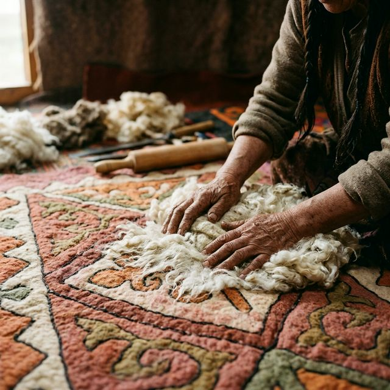

Each piece holds a story. Each story continues a life.
Keeping culture alive through women’s hands
This is a collection of stories of women craftswomen from the Naryn region. Through their work, they create, teach, and shape everyday life around them.
This project explores how women use traditional craft in their everyday lives — to create, work, and shape their communities.
The women shared different stories — each shaped by their own experiences, choices, and paths.
They use craft in their own ways: to work, to support themselves, to teach others, and to build connections with people around them.
Through what they do, they shape their lives, their communities, and what these practices mean today.
From the kurzhun
About the project
This site is an exploration of a traditional image. We collect stories, images and memories connected to the kurzhun — the bag that travelled with the people of Central Asia for centuries.
Each element here is like an object carefully drawn from its depths.
—
—